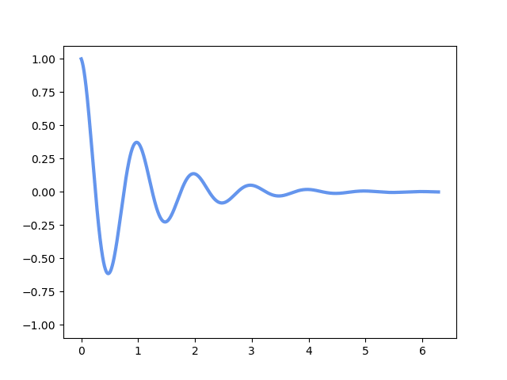

概述 （Overview）
- Q1. 为何编程？（Why）
- Q2. 何为编程？（What）
- Q3. 如何编程？（How）🤔🤔
- Q4. 形如编程？（Like）🤔🤔🤔
Q1. 为何编程？（Why）
首先考虑第一个重要的问题：为何学习(点击查看)？
灵魂拷问：为什么要学习xxx（Anything）
可能是萦绕在所有人头顶的一个
- 为什么要学习？（Why study?）
- 比如：
- 仅仅是为了所谓的“💯”
- 又或只是为了学会xxx（master somthing）？
- 是，但不仅仅是这样（Yes,but not only）
🧰 学习工具的重要性
工具能帮助人类
- 能帮助人类做到原先做不到的事情
- 能帮助人类更轻松地做到某些事情
- 能帮助人类“不需要做某些事情”
- 📐数学/💬语言也是工具
君子性非异也，善假于物也———[荀子]《劝学》
📜 学习思想的重要性
除了学习工具，还有思想
但是，理论不是一成不变的
用辩证法（英语：alectics，希腊语：διαλεκτική，dialektikḗ）(点击查看)看待理论，这才是学习思想的重要性
然而，为何要学习编程（Why learn to code）
从学习工具的视角看
- 🙂我们能使用最些前沿的工具
- 然后就能办到某些看似“遥不可及”的事
- 搭建个人网站
- 🎮 编写自己的电子游戏
- 对其他学科（数学、物理、生物等）仿真模拟（英语：Simulation）(点击查看)
- 然后就能办到某些看似“遥不可及”的事
从学习思想的视角看
- 🙃我们能通过编程了解前沿的理论
（甚至颠覆）- 计算机科学（英语：Computer science，有时缩写为CS）(点击查看)相关理论
- 🖇️ 计算机链接了“大多数”学科
- 计算机科学（英语：Computer science，有时缩写为CS）(点击查看)相关理论
Q2. 何为编程（英语：programming）(点击查看)？（What）
Programming is like sex. One mistake and you have to support it for the rest of your life ——— Michael Sinz
📖介绍一个东西，总要从历史出发
所以来看看历史
同样地，工具的历史
- 🖥️电子计算机（英语：Computer）(点击查看)
- 计算机的出现和“第二次世界大战(点击查看)”脱不了干系
- 计算机的历史在一定程度上代表了“最前沿”的工具发展史
- 现在可能是AI（英语：artificial intelligence）(点击查看)
- 计算机的出现和“第二次世界大战(点击查看)”脱不了干系
👨💻第一个编程语言的出现早于现代的计算机的诞生。首先，这种语言是种代码（英文：code）(点击查看)
🧮 重点讲讲图灵机 🌶️🌶️
- 一台图灵机是一个七元有序组$（Q,\Sigma,\Gamma,\delta,q_0,q_{accept},q_{reject}）$都是有限集合(点击查看)，且满足：

Q4. 形如编程？（Like）
Math like PL(Tools like PL)
Machine like PL(Automaton like PL)
The World like PL(Everything like PL)